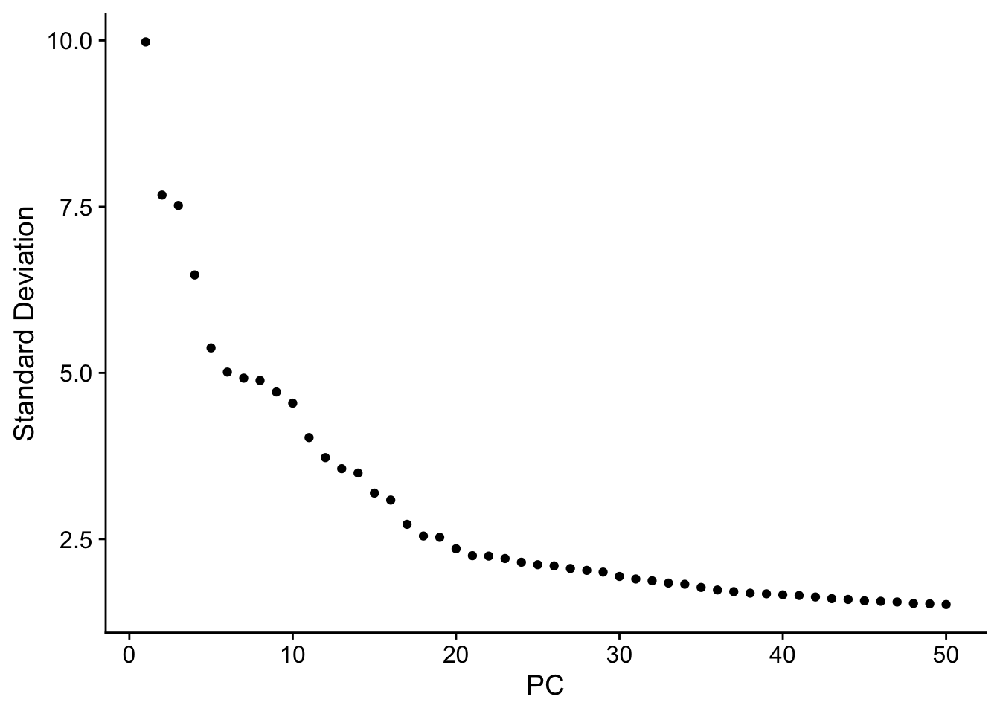
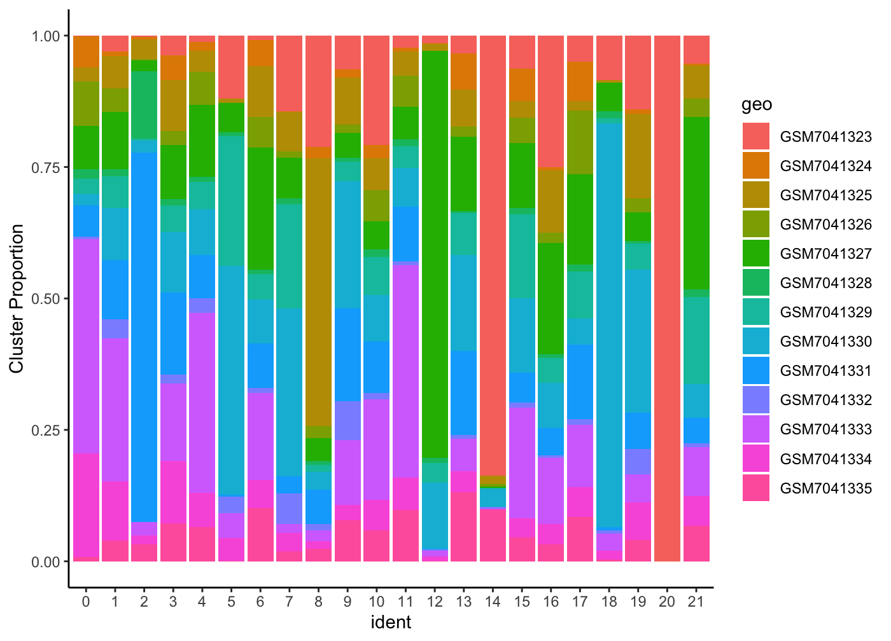

SingleCell
Last updated: 2024-11-29
Checks: 7 0
Knit directory: CVR-site/
This reproducible R Markdown analysis was created with workflowr (version 1.7.1). The Checks tab describes the reproducibility checks that were applied when the results were created. The Past versions tab lists the development history.
Great! Since the R Markdown file has been committed to the Git repository, you know the exact version of the code that produced these results.
Great job! The global environment was empty. Objects defined in the global environment can affect the analysis in your R Markdown file in unknown ways. For reproduciblity it’s best to always run the code in an empty environment.
The command set.seed(20241002) was run prior to running
the code in the R Markdown file. Setting a seed ensures that any results
that rely on randomness, e.g. subsampling or permutations, are
reproducible.
Great job! Recording the operating system, R version, and package versions is critical for reproducibility.
Nice! There were no cached chunks for this analysis, so you can be confident that you successfully produced the results during this run.
Great job! Using relative paths to the files within your workflowr project makes it easier to run your code on other machines.
Great! You are using Git for version control. Tracking code development and connecting the code version to the results is critical for reproducibility.
The results in this page were generated with repository version 393044a. See the Past versions tab to see a history of the changes made to the R Markdown and HTML files.
Note that you need to be careful to ensure that all relevant files for
the analysis have been committed to Git prior to generating the results
(you can use wflow_publish or
wflow_git_commit). workflowr only checks the R Markdown
file, but you know if there are other scripts or data files that it
depends on. Below is the status of the Git repository when the results
were generated:
Ignored files:
Ignored: .DS_Store
Ignored: .RData
Ignored: .Rhistory
Ignored: .Rproj.user/
Ignored: analysis/.DS_Store
Ignored: data/.DS_Store
Ignored: data/merged_Martin_GCA-SB-HealthyAdult_20220119_annotated_TO.rds
Ignored: data/rmds/.DS_Store
Ignored: static/
Note that any generated files, e.g. HTML, png, CSS, etc., are not included in this status report because it is ok for generated content to have uncommitted changes.
These are the previous versions of the repository in which changes were
made to the R Markdown (analysis/workflow_sc.Rmd) and HTML
(docs/workflow_sc.html) files. If you’ve configured a
remote Git repository (see ?wflow_git_remote), click on the
hyperlinks in the table below to view the files as they were in that
past version.
| File | Version | Author | Date | Message |
|---|---|---|---|---|
| Rmd | 393044a | DrThomasOneil | 2024-11-29 | Update |
| html | 48450fa | DrThomasOneil | 2024-11-29 | Build site. |
| html | 1fbca00 | DrThomasOneil | 2024-11-29 | Build site. |
| html | 8f1c3b0 | DrThomasOneil | 2024-11-29 | Build site. |
| html | d543983 | DrThomasOneil | 2024-11-28 | Build site. |
| html | 365a870 | DrThomasOneil | 2024-11-28 | Build site. |
| html | 63bccfd | DrThomasOneil | 2024-11-28 | Build site. |
| html | 73f1db3 | DrThomasOneil | 2024-11-28 | Build site. |
| html | 293911d | DrThomasOneil | 2024-11-28 | Build site. |
| html | a599253 | DrThomasOneil | 2024-11-27 | Build site. |
| html | fe35d25 | DrThomasOneil | 2024-11-26 | Build site. |
| html | c0363a3 | DrThomasOneil | 2024-11-26 | Build site. |
| html | 1b209b4 | DrThomasOneil | 2024-11-22 | Build site. |
| html | 5217986 | DrThomasOneil | 2024-11-22 | Build site. |
| html | 6e58807 | DrThomasOneil | 2024-11-22 | Build site. |
| Rmd | b5edf53 | DrThomasOneil | 2024-11-22 | Update |
| html | ec67e7c | DrThomasOneil | 2024-11-22 | Build site. |
| html | e0991a3 | DrThomasOneil | 2024-11-22 | Build site. |
| html | d35071d | DrThomasOneil | 2024-11-22 | Build site. |
| html | 7760ddb | DrThomasOneil | 2024-11-22 | Build site. |
| html | 2d957a5 | DrThomasOneil | 2024-11-22 | Build site. |
| html | 38104b4 | DrThomasOneil | 2024-11-22 | Build site. |
| html | e9a36e0 | DrThomasOneil | 2024-11-22 | Build site. |
| html | 566e205 | DrThomasOneil | 2024-11-22 | Build site. |
| Rmd | 2486ea0 | DrThomasOneil | 2024-11-22 | Update |
library(GEOquery)
library(Seurat)
library(Matrix)
library(ggplot2)
library(cowplot)
library(dplyr)theme_set(theme_classic())
set.seed(1337)Single cell analysis workshop
There are tonnes of single cell RNA sequencing datasets that are publicly available. Packages like Seurat have also developed user-friendly functions and workflows that make analysis easy, too. Therefore, the only limitation to analyse unexplored facets of public data is a clear and efficient workflow.
However, there is no one-size-fits-all for analysis. As such, it really just takes time, practice and patience. To this end, here is yet another practice script for analysing single-cell RNA sequencing data.
Instead of focusing on the downstream analysis, I’ll demonstrate some of the upstream processing steps in more detail. To save on time and space, the large majority of my workflow will use only ONE sample. And then I will pump through all samples and cover integration.
- Downloading and loading data into Seurat
- QC
- Normalisation
- Annotation
- Integration
The data is derived from perianal fistula in Crohn’s disease.
Downloading and loading data into Seurat
Downloading and processing the data will take up ~2GB of space. So choose where you want to set your wd such as D: or C: drive or OneDrive etc.
You can manually download the data, but I’m preferring to handle everything in R from now on, as it creates a perfect reproducibility report.
pDir = getwd()
if(!dir.exists("raw")){dir.create("raw")}
if(!dir.exists("data")){dir.create("data")}
#download the data from the GEO
download.file("https://www.ncbi.nlm.nih.gov/geo/download/?acc=GSE225199&format=file",
destfile = "GSE225199.tar",
method = "curl")
#untar data into a new folder called "raw"
untar("GSE225199.tar", exdir = "raw")From the GEO, we can also collect the submitted metadata for each sample. There are two reasons for this:
a, We can use the GSM’s to open each unique sample b. We can immediately and automatically assign metadata to the final sample
gse <- pData(GEOquery::getGEO("GSE225199")[[1]])
saveRDS(gse, "data/gse,rds")We also want to create a new folder for data and load in the names of the files we downloaded
mats = list.files("raw/", pattern= ".mtx")
bars = list.files("raw/", pattern= "barcode")
feats = list.files("raw/", pattern= "feat")Load in the first sample
{
setwd("raw")
i=1
mat = readMM(grep(rownames(gse)[i], mats, value=T))
feat = read.delim(grep(rownames(gse)[i], feats, value=T), header=F)
bar = read.delim(grep(rownames(gse)[i], bars, value=T), header=F)
feat$V4 <- make.unique(feat$V2, sep="-")
}We have three separate objects:
- mat is the matrix of expressions with rows = genes and columns = barcodes
- feat contains the features/genes, and has three columns: a) Ensembl gene ID, b) Gene name, and c) type of expression.
- bar contains the barcode IDs. These have no real relevance for now, but for the purposes here, are unique and can be used to match up meta-data.
Here, I also build a metadata data frame. We use the rownames as
barcodes so the Seurat knows which metadata row aligns to the which
column in the matrix. I use information from the gse
object, such as sex, inflammation status and batch. This can be done
AFTER you’ve built the Seurat object, but I wanted to show you how to
make a Seurat object with corresponding metadata. This is useful for
more complex functions in downstream analysis, such as chopping up and
restitching data.
Lastly we CreateSeuratObject and store extra metadata
about the genes. This is important, as Seurat doesn’t like duplicated
rownames. So, I’ve created the object using the unique genenames, and
store the extra gene info as metadata. We can then process the data
without Seurat flipping out over it. Why we have duplicated gene names
is possibly due to gene isotypes - the same protein from a different
transcript/gene. We dont want to assume anything about which variant of
the same protein is more important. Therefore, we dont automatically
just keep the first instance, nor keep the one with the highest count.
Most likely, the transcript variant with the least counts will be
filtered out in a future step.
rownames(mat) <- feat$V4 #rownames = genes
colnames(mat) <- bar$V1 #colnames = barcodes
#generate the metadata file using information from the gse object
met <- data.frame(row.names = bar$V1)
met$batch <- gse$`batch:ch1`[i]
met$sex <- gse$`Sex:ch1`[i]
met$disease <-gse$`disease status:ch1`[i]
met$inflam <- gse$`inflammation status:ch1`[i]
met$geo <- gse$geo_accession[i]
#create seurat object
seu <- CreateSeuratObject(mat, meta.data = met)
# feature metadata
seu@assays$RNA@meta.data
seu@assays$RNA@meta.data$geneID <- feat$V2
seu@assays$RNA@meta.data$geneID_Unique <- feat$V4
seu@assays$RNA@meta.data$ensembl <- feat$V1QC
There are a few common QC metrics for single cell, and this is where you will probably spend the most time. There is no gold standard and its really a game of balancing how much data you’re willing to bin in order to achieve higher quality. There are limits you need to be careful of, however, such as removing cells that are high quality, but dont meet your metrics.
Often times, I will set loose metrics, and go all the way through to clustering and annotation before wanting to tidy the data up further. This is usually my default, as we typically then isolate cell-types of interest and I can spend more time tailoring QC for those cells.
An example might be the mitochondrial percentage. High mitochondrial
RNA counts are calculated by dividing the summed counts from the 13 or
so mito-genes (typically prefixed by MT- or
MT.) by the total count per cell. A threshold is set to
remove cells that contain too high a mitochondrial RNA content as this
can be indicative of dead or dying/leaky cells - cytoplasmic RNA is
leaked from the cell, but retain mitochondrial RNA, thus, the majority
of the RNA counted in that cell would be mitochondrial. This can vary
drastically. You will see some people set it quite low (5%) and some
quite high (25%).
Again, this comes down to your study. I will set a high threshold for initial processing, and reduce this when I get to my celltype of interest. The reason for this is because if, for example, you are looking at whole digested tissue, some non-immune cells, such as muscle cells, will have higher mitoRNA. So to set a blanket threshold on diverse data, you may unknowingly be bias in removing whole cell types. Contrastingly, immune cells are expected to be quite low. If you isolate T cells (which are typically robust in tissue digestions) in the data you might find that almost none exceed 10%. And so lowering the threshold to 5% might only remove a small fraction of your data. DCs and Macs which are more fragile might be starting to die, depending on the paper’s methods, and in the same dataset might need a higher threshold.
Therefore, the QC steps in single cell RNA analysis is very much individually determined per dataset (and even sample). Furthermore, I’d encourage you, even when you are happy with the thresholds, to continually check them during the processing. And to be open to the fact that there’s a huge possibility that you need to readjust your thresholds and start all over.
Also worth checking out what the original paper used for QC when recreating figure:
Filtered gene expression matrices were loaded into Seurat v. 4.1.1 with min.features = 200 and min.cells = 3.14 The following QC parameters were used: number of genes 250-6500, number of transcripts >300, mitochondria percent <30% and log10(Genes/UMI) >0.80. Only genes that were observed to be expressed in 10 or more cells were kept for downstream analysis. After QC, 67,119 cells from rectal tissue were kept for downstream analysis.# typically you can just use
#
# PercentageFeatureSet(seu, pattern = "^MT-")
#
# You can confirm this using this
# seu@assays$RNA@meta.data[grep("MT-", seu@assays$RNA@meta.data$geneID),]
seu$percent.mt <- PercentageFeatureSet(seu, features=rownames(seu)[grep("MT-", seu@assays$RNA@meta.data$geneID)])
VlnPlot(seu, "percent.mt", pt.size=0.1, alpha=0.1)+
NoLegend()+theme(axis.text.x = element_text(size=0))+xlab("")+
geom_hline(yintercept = 30)
table(OverThreshold=seu$percent.mt>30)
Another couple of metrics to look at are nFeature and
nCount. nFeature is the number of unique
features across the 36000 genes expressed in that cell.
nCount is the total count of all genes expressed in
that cell. We can use these in a few ways.
A cell that has too few variety or total transcripts might represent,
again, a dead or dying/leaky cells, but also an empty cell.
This is where a cell isn’t paired with a bead during acquisition, but
rather a bunch of extracellular mRNA. Therefore, a low count is probably
indicative of poor quality barcodes.
A cell that has too high a variety or total count is possibly indicative of duplicates. There are other packages that can be used for duplicates, but this is one of the more common ways to filter. For example, B cells will all contain roughly the same variety of genes, and T cells a different variety of genes. Therefore, these cells will contain roughly the same number of unique features. However, if a B cell and a T cell are contained in the same droplet, you will have, theoretically, double the number of unique genes. So, while you can have highly diverse subsets, the chances are, you have high unique transcripts in doublets.
FeatureScatter(seu, "nFeature_RNA", "nCount_RNA", pt.size=0.1)+
geom_hline(yintercept = 30000)+
geom_vline(xintercept = 500)+
geom_text(label="Unique features: 500\nTotal features: 30,000", x=2500, y=38000 )
#label the points to throw
seu$filter = ifelse(seu$nCount_RNA<30000 & seu$nFeature_RNA>500, "keep", 'throw')
FeatureScatter(seu, "nFeature_RNA", "nCount_RNA", group.by = "filter")+
geom_hline(yintercept = 30000)+
geom_vline(xintercept = 500)+
geom_text(label="Unique features: 500\nTotal features: 30,000", x=2500, y=38000)
For the sake of showing how this might affect clustering, I will not filter them right now.
Lastly, we can filter the actual genes themselves. This should lower the object size AND reduce possible noise when processing the data.
Again, this isn’t a gold standard metric. Basically we can remove cells that are not present in a certain number of cells. Some people use an exact number (e.g. the gene needs to be present in at least 10 cells) or proportion (e.g. has to be present in 3% of cells). I’ve seen this done both before and after filtering cells.
zeroes <- rowSums(seu@assays$RNA@layers$counts!=0) # counts the number of non-zeros per row.
table(PresentIn3pc=zeroes<0.03*ncol(seu), ZeroCounts=zeroes==0) #~24000 genes are not expressed in >3% of cells. For the purposes of this, I will use the QC metrics employed by the original paper so that we can recreate their figures.
# visual rep of whats happening!
seu@assays$RNA@layers$counts[210:220,210:220]
seu@assays$RNA@layers$counts[210:220,210:220]!=0
rowSums(seu@assays$RNA@layers$counts[210:220,210:220]!=0)
# according to the paper methods
# gene has to be present in at least 10 cells
seu <- seu[zeroes>=10,]
# number of genes and number of transcripts
seu$filter = ifelse(seu$nCount_RNA>300 & seu$nFeature_RNA>250 & seu$nFeature_RNA<6500 & seu$percent.mt<30, "keep", 'throw')
seu <- subset(seu, subset = filter =="keep")
dim(seu)Data processing
Standard Seurat Pipeline
A standard Seurat pipeline can be found here.
seu <- NormalizeData(seu, verbose=F)
seu <- FindVariableFeatures(seu, verbose=F)
VariableFeatures(seu)
seu <- ScaleData(seu, features = rownames(seu), verbose=F)
seu <- RunPCA(seu, verbose=F)
#PCA visualisations
PCAPlot(seu)
VizDimLoadings(seu, dims=1:2)
#print(seu[["pca"]], dims = 4, nfeatures = 5)
PCAPlot(seu, dims=c(3,4))+geom_hline(yintercept = 0)
Elbow plots are one way to choose the number of dimensions to use from the PCA. The SD represents the variability in the genes across that dimensions. With lower variability, you get lower SD, and a more unique expression across the cells on those dimensions. So we can decide to use as many dimensions as we want. Too few and you may as well use the PCA itself for visualisations and clustering. Too many and you might introduce a lot of senseless noise.
This again, is an individually decided metric.
ElbowPlot(seu, ndims=50)
#paper uses 15 as cutoff and 0.5 for resolution
seu <- FindNeighbors(seu, dims = 1:15, verbose=F)
seu <- FindClusters(seu, resolution = 0.5, cluster.name = "D1_15_R05", verbose=F)
seu <- RunUMAP(seu, dims = 1:15, verbose=F)
seu <- RunTSNE(seu, dims = 1:15)
plot_grid(ncol=2,
PCAPlot(seu, label=T, pt.size=1)+NoLegend()+NoAxes()+ggtitle("PCA"),
UMAPPlot(seu, label=T, pt.size=1)+NoLegend()+NoAxes()+ggtitle("UMAP"),
TSNEPlot(seu, label=T, pt.size=1)+NoLegend()+NoAxes()+ggtitle("TSNE")
)
Annotations
DotPlot(seu, c("CD3E", #T
"LYZ","CD14", #MNP
"KIT","HPGDS", "TPSAB1", # granulo
"MZB1", "CD79A", 'MS4A1', #B/Plasma
"MKI67", 'TYMS', #Cycling,
"PECAM1", "VWF", "CD34", "LYVE1", #endothelial,
"COL1A1", "COL6A1", "ACTA2", "NOTCH3", #Fb
"PIGR", "KRT8"
))+
RotatedAxis()
annotations = c(
"0" = "Epi",
"1" = "Epi2",
"3" = "Epi3",
"5" = "Epi4",
"8" = "Epi5",
"4" = "Cycling",
"10" = "Fibroblast",
"13" = "Endothelial",
"7" = "T cells",
"2" = "B cells",
"6" = "Plasma",
"9" = "Plasma2",
"12" = "MNP",
"11" = "Granulo",
"14" = "Granulo2"
)
seu <- RenameIdents(seu, annotations)
seu$Init_Anno <- Idents(seu)
saveRDS(seu, "data/sample1.rds")plot_grid(ncol=2,
PCAPlot(seu, label=T, pt.size=1, repel=T)+NoLegend()+NoAxes()+ggtitle("PCA"),
UMAPPlot(seu, label=T, pt.size=1, repel=F)+NoLegend()+NoAxes()+ggtitle("UMAP"),
TSNEPlot(seu, label=T, pt.size=1, repel=T)+NoLegend()+NoAxes()+ggtitle("TSNE")
)
Vis: UMAPs
# to test out yourselves
UMAPPlot(seu,
label=T,
pt.size=1,
repel=F)+NoLegend()+NoAxes()+
scale_color_viridis_d()+ggtitle("Set colour scale")
UMAPPlot(seu,
label=T,
pt.size=1,
repel=F)+NoLegend()+NoAxes()+
scale_color_manual(values=colorRampPalette(c("violet", "blue", "yellow","red"))(15))+ggtitle("Selected Scale")
UMAPPlot(seu,
label=T,
pt.size=1,
repel=F)+NoLegend()+NoAxes()+
scale_color_manual(values=rainbow(15))+ggtitle("Rainbow!")
UMAPPlot(seu,
label=T,
repel=F,
label.box=T,
cols=colorRampPalette(c("violet", "blue", "yellow","red"))(15),
label.size=2,
pt.size=2)+
NoLegend()+NoAxes()+
ggtitle("With added features")Vis: DotPlot
# to test out yourselves
genes = c("EPCAM", "MKI67", "COL1A1", "CD34", "CD3E", "MS4A1", "CD79A", "MZB1", "LYZ", "HPGDS")
DotPlot(seu, features=genes)
DotPlot(seu, features=genes)+
labs(y="",x="", title="Titles")
DotPlot(seu, features=genes)+
RotatedAxis()+NoLegend()+
labs(y="",x="", title="Rotated X Axis & NoLegend")
DotPlot(seu,
features=genes,
cols=c("yellow", "blue"))+
RotatedAxis()+
labs(y="",x="", title="Changed Colour Palette")
DotPlot(seu,
features=genes,
cols=c("yellow", "blue"),
idents=c("T cells", "B cells","Plasma","Plasma2", "MNP"))+
RotatedAxis()+
labs(y="",x="", title="Idents of Interest")
DotPlot(seu,
features=genes,
cols=c("yellow", "blue"),
idents=c("T cells", "B cells","Plasma","Plasma2", "MNP"))+
RotatedAxis()+
coord_flip()+
labs(y="",x="", title="CoordFlip")Integration
Lastly, we’ll cover integration. There are a few ways to do this. But mainly, if you’re working with Seurat, you’ll probably look at CCA or RPCA.
We just need to start by loading in all the other data.
setwd("raw")
i=1
mat = readMM(grep(rownames(gse)[i], mats, value=T))
feat = read.delim(grep(rownames(gse)[i], feats, value=T), header=F)
bar = read.delim(grep(rownames(gse)[i], bars, value=T), header=F)
feat$V4 <- make.unique(feat$V2, sep="-")
rownames(mat) <- feat$V4 #rownames = genes
colnames(mat) <- bar$V1 #colnames = barcodes
#generate the metadata file using information from the gse object
met <- data.frame(row.names = bar$V1)
met$batch <- gse$`batch:ch1`[i]
met$sex <- gse$`Sex:ch1`[i]
met$disease <-gse$`disease status:ch1`[i]
met$inflam <- gse$`inflammation status:ch1`[i]
met$geo <- gse$geo_accession[i]
#create seurat object
seu <- CreateSeuratObject(mat, meta.data = met)
# feature metadata
seu@assays$RNA@meta.data
seu@assays$RNA@meta.data$geneID <- feat$V2
seu@assays$RNA@meta.data$geneID_Unique <- feat$V4
seu@assays$RNA@meta.data$ensembl <- feat$V1
seu$percent.mt <- PercentageFeatureSet(seu, features=rownames(seu)[grep("MT-", seu@assays$RNA@meta.data$geneID)])
# number of genes and number of transcripts
seu$filter = ifelse(seu$nCount_RNA>300 & seu$nFeature_RNA>250 & seu$nFeature_RNA<6500 & seu$percent.mt<30,
"keep",
'throw')
seu <- subset(seu, subset = filter == "keep")
data <- seu
for(i in 2:nrow(gse)){
mat = readMM(grep(rownames(gse)[i], mats, value=T))
feat = read.delim(grep(rownames(gse)[i], feats, value=T), header=F)
bar = read.delim(grep(rownames(gse)[i], bars, value=T), header=F)
feat$V4 <- make.unique(feat$V2, sep="-")
rownames(mat) <- feat$V4 #rownames = genes
colnames(mat) <- bar$V1 #colnames = barcodes
#generate the metadata file using information from the gse object
met <- data.frame(row.names = bar$V1)
met$batch <- gse$`batch:ch1`[i]
met$sex <- gse$`Sex:ch1`[i]
met$disease <-gse$`disease status:ch1`[i]
met$inflam <- gse$`inflammation status:ch1`[i]
met$geo <- gse$geo_accession[i]
#create seurat object
seu <- CreateSeuratObject(mat, meta.data = met)
# feature metadata
seu@assays$RNA@meta.data
seu@assays$RNA@meta.data$geneID <- feat$V2
seu@assays$RNA@meta.data$geneID_Unique <- feat$V4
seu@assays$RNA@meta.data$ensembl <- feat$V1
seu$percent.mt <- PercentageFeatureSet(seu, features=rownames(seu)[grep("MT-", seu@assays$RNA@meta.data$geneID)])
# number of genes and number of transcripts
seu$filter = ifelse(seu$nCount_RNA>300 & seu$nFeature_RNA>250 & seu$nFeature_RNA<6500 & seu$percent.mt<30,
"keep",
'throw')
seu <- subset(seu, subset = filter == "keep")
data <- merge(data, seu)
}
#rm(bar,feat,mat,met, bars, feats, i, mats, zeroes)
setwd(pDir)
data[["RNA"]] <- JoinLayers(data[["RNA"]])
zeroes <- rowSums(data@assays$RNA@layers$counts!=0) # counts the number of non-zeros per row.
data <- data[zeroes>=10,]
saveRDS(data, "data/all_data_unint.rds")Performing the integration here, we’ll use RPCA because its quicker. I’m going to integrate per batch, though you might want to check that this is enough. You might want to integrate per individual samples, if you still see batch effects and have enough cells.
data <- readRDS("data/all_data_unint.rds")
options(future.globals.maxSize = 3 * 1024^3) # 3 GiB
data[["RNA"]] <- split(data[["RNA"]], f = data$batch)
data <- NormalizeData(data,verbose=F)
data <- FindVariableFeatures(data,verbose=F)
data <- ScaleData(data,verbose=F)
data <- RunPCA(data,verbose=F)
# checking unintegrated analysis
data <- FindNeighbors(data, dims = 1:15, reduction = "pca",verbose=F)
data <- FindClusters(data, resolution = 0.5, cluster.name = "unintegrated_clusters",verbose=F)
data <- RunUMAP(data, dims = 1:15, reduction = "pca", reduction.name = "umap.unintegrated",verbose=F)
#integrating data
data <- IntegrateLayers(object = data, method = RPCAIntegration, orig.reduction = "pca", new.reduction = "integrated.rpca",
verbose = T)
data[["RNA"]] <- JoinLayers(data[["RNA"]])
data <- FindNeighbors(data, reduction = "integrated.rpca", dims = 1:15,verbose=F)
data <- FindClusters(data, resolution = 0.5,verbose=F)
data <- RunUMAP(data, dims = 1:15, reduction = "integrated.rpca",verbose=F)
saveRDS(data,"data/integrated.rds")Here is a clear example, on the right, of one sample being drastically different to the rest. It is possible that this requires more stringent integration per sample, rather than per batch.
But will ultimately be up to the user who might identify that some of these UMAP tails are real groups of unique cells to that donor, or more artificial differences created by batch errors. It is for this reason that I’ll often check the proportion of donor cells per cluster to make sure one cluster isn’t being predominated by one or two donors.
data <- readRDS("~/Library/CloudStorage/OneDrive-TheUniversityofSydney(Staff)/projects/GSE225199_fistula/data/integrated.rds")
plot_grid(
DimPlot(data, reduction = "umap", group.by = "geo", label=T)+NoLegend()+ggtitle("RPCA"),
DimPlot(data, reduction = "umap.unintegrated", group.by = "geo", label=T)+NoLegend()+ggtitle("No Int")
)
FetchData(data, c("ident","geo")) %>% group_by(ident) %>%
mutate(prop=1/length(ident)) %>%
ungroup() %>%
group_by(ident,geo) %>%
summarise(totprop=sum(prop)) %>%
ggplot(aes(x=ident,fill=geo,y=totprop)) +
geom_bar(position='fill', stat='identity') +
theme(axis.text.x =element_text(angle = 45,hjust=1))+scale_y_continuous(name="Cluster Proportion")+ theme_classic()
FetchData(data, c("ident","batch")) %>% group_by(ident) %>%
mutate(prop=1/length(ident)) %>%
ungroup() %>%
group_by(ident,batch) %>%
summarise(totprop=sum(prop)) %>%
ggplot(aes(x=ident,fill=batch,y=totprop)) +
geom_bar(position='fill', stat='identity') +
theme(axis.text.x =element_text(angle = 45,hjust=1))+scale_y_continuous(name="Cluster Proportion")+ theme_classic()
Cluster 8,14, 20 needs to be investigated. If they are real clusters that could exist in those samples, then it is not a batch effect. If those clusters are identical but slightly different from the adjacent celltypes, then it is batch effects and a more rigorous attemp should be made, such as CCA or int-per-donor rather than by batch.
sessionInfo()